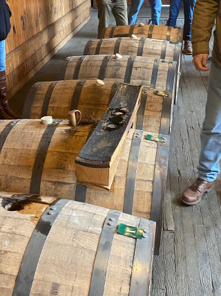

Recapping The EH Taylor Barrel Pick Trip

It was a cold afternoon in Kentucky. Cloudy, windy, and cold. And like most of these trips, they start with whiskey.
Our evening started at the Peal of Germantown. This is a frequent stop for the DBC as they have outstanding single barrel picks and a great dive bar feel. Yes, great whiskey was enjoyed. They had a half dozen Eagle Rare picks, and a Weller Full Proof that just blew everyone away. We were joined by Kenny & Ryan of the GREAT Bourbon Pursuit Podcast.
After the opening Salvo of drinks at the Peal, the group made their way to the Pearl's sister property, the world famous Silver Dollar. As you can see above, the selection at the Silver Dollar is second to none. It's an insane whiskey list that is completely comprehensive and full of unique single barrels at very reasonable prices. Not to mention their cocktails, the Bourbon Pursuit boys got us hooked on the Gold Rush cocktail. It's a mix of bourbon, honey and lemon and it is just outstanding. Can't wait to knock a few back this summer.
It was an outstanding meal full of laughs, hot whiskey takes (get the Pursuit guys going on Jack Daniel's Rye) and story swapping. After dinner (and more drinks) we went back to the hotel for cigars and this little tasty treat. (Never in my life would I think I would have an opportunity to taste Old Rip Van Winkle 25. No other words to describe except buttery, leathery greatness)
8 AM wake up calls come pretty early after a long night of bourbon and story swapping, but we were all able to make it to the bus on time. May I recommend Bruce at Central Kentucky Tours by the way...Feeling totally energized and excited, we made our way from Louisville to Frankfurt and the gorgeous grounds of the Buffalo Trace distillery.
Despite it being a cold and cloudy day, the grounds of Buffalo Trace are just so pretty and inspiring to me. It's a beautiful distillery and because of it's status as a National Historical Landmark, the grounds have been kept with the same look and feel that they would have back in early 1900's. The brick buildings, the tracks for barrels, the miles and miles of piping...all of it seems like it's been frozen in time from a bygone era. Except it's still very much a functioning business producing thousands of barrels of whiskey each year and undergoing over a billion dollars worth of modernization improvements. It's really a neat place and it's hard to describe all of the nuance that encapsulates the grounds of Buffalo Trace. I'll borrow a phrase from the Great Freddie Johnson that I think does a good job capturing the spirit of it all: Honor Tradition, Embrace Change.
 And while that phrase
may capture the spirit of Buffalo Trace Distillery, Freddie Johnson is the man
who lives it. I've
seen the movie NEAT about 100 times, and I've heard Freddie on the Bourbon Pursuit podcast. But
there is nothing,
NOTHING, NOTHING that even comes close to going on the man's tours and spending an hour or
two with
him. I don't think
there's anyone more knowledgeable about the history, the whiskey, the people, and the places
regarding bourbon than him.
But more than that, he is simply an incredible person and just exudes happiness. He had a kind word
to say to every
single person at the Distillery, from gift shop clerk to bottling line manager; Freddie knew their
name and had a big
smile. With everything that he does, he inspires joy and radiates positive energy. I had high
expectations for a Freddie
Johnson tour of Buffalo Trace and he exceeded them in every single way.
And while that phrase
may capture the spirit of Buffalo Trace Distillery, Freddie Johnson is the man
who lives it. I've
seen the movie NEAT about 100 times, and I've heard Freddie on the Bourbon Pursuit podcast. But
there is nothing,
NOTHING, NOTHING that even comes close to going on the man's tours and spending an hour or
two with
him. I don't think
there's anyone more knowledgeable about the history, the whiskey, the people, and the places
regarding bourbon than him.
But more than that, he is simply an incredible person and just exudes happiness. He had a kind word
to say to every
single person at the Distillery, from gift shop clerk to bottling line manager; Freddie knew their
name and had a big
smile. With everything that he does, he inspires joy and radiates positive energy. I had high
expectations for a Freddie
Johnson tour of Buffalo Trace and he exceeded them in every single way.
I know you all want to hear about the barrel selection and we are getting there. I just wanted to
bring one last thing
about the tour up. After we took a tour of the mysterious (and amazing) Buffalo Trace vault, Freddie
pulled us all aside
for one last story. I'll never forget what he told us:
"Always remember, it is far better to have the memories that a good bottle creates when you share
it with friends and
loved ones than to know the memories never got created because you didn't like the way somebody
drank their whiskey."
After Freddie's parting words, it was time to select our barrels. Freddie handed us off to Susana, our host from a year ago, and we were off to the races. Susanna had six barrels available for us to taste and choose from: three Colonel Taylor's and three Eagle Rare's. As we did last time, there are two ways to taste the barrels: at barrel proof and at bottling proof.
Starting with the Taylor, we had three selections to work through: each of them were about nine or ten years old and clocked in at 135ish proof. As a huge fan of Colonel Taylor, this was a really special experience for me. What shocked me was 1) Colonel Taylor is a LOT older than I thought it would be and 2) All of the barrels were in great shape. A lot of times, the barrels get leaky or damaged during their life span, not these, they were all in pristine condition. The whiskey itself was a tough decision because all three were delicious in their own ways. The first barrel had the classic Taylor notes of toffee and dark fruit. The second barrel had an outstanding chocolate cherry nose and tasted like golden raisins and creme brulee. At barrel proof, this whiskey was magical, and the great taste and mouthfeel did not compromise at 100 proof. But it seems like we saved the best for last. The third barrel had candied pecans on the nose and tasted like vanilla with an explosion of a finish. This one was my leader in the clubhouse.
If I could have selected a favorite at barrel proof, it would have been barrel #2. But, ultimately that was not an option. When the group went to a vote, barrel #1 was immediately voted off the island. The final decision came down to a blind taste between Barrel A and Barrel B. I thought Barrel A was butterscotch greatness and it got my vote, but I was in the minority. Barrel B was the winner. And it turned out that our winner was Barrel #2. A fantastic choice.
Selecting the Eagle Rare barrel was just as delightful. We followed the same formula: one glass at barrel proof and one glass at bottling proof. Let me tell you that Eagle Rare at barrel proof is NOTHING short of beautiful. It's the most gorgeous color, and it's got an oily mouthfeel that coats your palate. Buffalo Trace, if you're reading this...America is ready for barrel proof Eagle Rare!
Our three barrels were between 10 and 11 years old. My first barrel, Barrel #4, had the most unreal mouthfeel that I've ever experienced in a whiskey and it had the biggest finish I can remember. Bringing it back down to bottle proof, this whiskey was nice, light and had those classic Eagle Rare notes of leather and black pepper spice. Barrel #5 had an interesting taste of bananas and floral notes. Finally, Barrel #6 was nice and easy drinking but a little pedestrian compared to its brothers. It had the biggest finish of any of the previous barrels which was especially impressive given it's huge finish stood up at 90 proof. Before the voting began, Barrel #4 was my favorite of that bunch.
When the voting began, it was a quick decision to eliminate Barrel #5. Picking between #4 & #6 was not easy. In order to help us make a fair assessment, Susanna prepared the two whiskies in a blind taste off. Barrel A had a great flavor and a superb mouthfeel. Barrel B was just ok to me and it had a corn/grainy aftertaste. When the voting began, it was a landslide. Barrel A aka Barrel #4 was our winner.
With our barrel selections completed and the tour done, we thanked our gracious hosts and then packed up for our last stop: Barton Distillery for a 1792 Full Proof selection.
While Buffalo Trace shows off its history and illustrious pedigree, Barton prefers to get right down to it and focus on the whiskey. Once we arrived at the distillery, we hit the ground running. We were ushered to a rickhouse where a long table was laid out and set up with glasses. Four barrels on the floor of the rickhouse. It was FREEZING in there, but it was really pretty cool because of the no-frills, all-whiskey vibe that they are going for.
Our four barrels were lined up and ready. Each of them was roughly 8 years old, barreled at 135 proof and bottled at 125 proof. The first barrel was oaky with lots of vanilla shining through, generally pretty nice. Barrel #2 had a strong note of honey in the middle but lacked a good finish. The group agreed to eliminate Barrel #3 as it just did not stand out. The fourth barrel had everything that I love in bourbon: oily mouthfeel and a complex flavor The group was pretty slight on Barrel 1, 2 and 4 so we had a three way blind set up.
The three way tiebreaker was set up with Left, Right and Center barrels. The left barrel was very good, but to me, the barrel in the center was really good. The barrel on the right had the most superb mouthfeel. When the voting happened, it was a runaway winner: the left barrel took it.